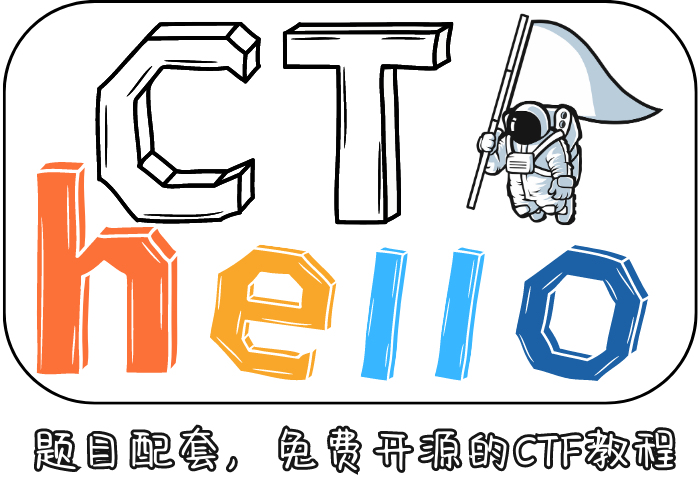

💖欢迎来到新手村x¶
这篇教程会引导你大致的了解CTF，并且尝试教会你如何入门CTF。
当然，文档可能不是那么完善，如果你觉得文档缺少什么东西或者有什么不足的地方，请及时向我反馈，我会尽力完善这个文档。
考虑到有的新生可能不太会使用GitHub的issue功能，所以这里也提供其他反馈方式：
- 通过B站私信反馈：探姬_Official
- 通过填写反馈表（无需登录）：点我填写反馈表
- 通过QQ群聊反馈：点击加入反馈群
玩的开心x and 祝你好运 ！😊
📓一些属于CTF世界词语的Wiki¶
-
师傅 CTF圈子中，CTFer们通常以"师傅"相互称呼。
-
WriteUp 又称作WP，是记录CTF比赛中解题过程的文章，通常包含题目描述、解题思路、解题过程、源码分析、脚本分析等内容。当然你也可以简单理解为解题报告——题解。
-
一把梭 代指一类解题过程或者方法，一般指将题目中给出的 对应的附件 / 代码 / 密文 等，直接丢到某个工具或者网站上，就能得到flag的解题方法。
-
套娃 一是指一些题目比如说加密题，嵌套了多层的加密，需要多次解密才能得到flag，即一道题中可能涉及到多个知识点的考察 ； 二是带有一定贬义意义，通常指出题人只是为了出题人而出题 单纯的 一味的 向题目中叠加trick 导致本来就不新颖的题目还变得更加复杂，使得题目的难度无意义的变高。
👁看看你的！¶
- CTF (Capture The Flag)中文一般译作夺旗赛，在网络安全领域中指的是网络安全技术人员之间进行技术竞技的一种比赛形式。CTF起源于1996年DEFCON全球黑客大会，以代替之前黑客们通过相发起真实攻击进行技术比拼的方式。
- CTF有个人赛和团队赛，在主流比赛中多为团队赛，通常分为五个方向:MISC、CRYPTO、WEB、REVERSE、PWN;
- CTF赛制分多种，常见的为线上解题赛、线下awd模式、线下awd plus模式等。
👀好怪哦，再看一眼¶
赛制主要有下面几种x
- 线上解题制:目前大多数国内外CTF比赛的主流形式，选手自由组队参赛。题目通常在比赛过程中陆续放出。解出一道题目后，提交题目对应的flag即可得分，比赛结束时分高者获胜。
- 线下awd制:通常为现场比赛，多数CTF决赛的比赛形式，选手自由组队参赛。相比于解题模式，时间更短，比赛中更注重临场反应和解题速度，需要能够快速攻击目标主机的权限，考察团队多方面的综合安全能力。
- 线下awd plus制(AWDP):静态攻防赛，也可以成为解题+加固赛，参赛队伍无法直接攻击其他队伍，只有每回合算分和其他队伍有关。参赛战队可以直接对其他队伍gamebox发起攻击，通过ssh登录加固自己gamebox。
看的有点迷糊？没关系，~我们看点更迷糊的x~暂时了解就好啦，在CTF中，我们一般接触的最多的就是解题制。
一般步骤就是 看题 开题 做题拿Flag 提交Flag
❓看不懂么？知道他们存在就行了~遇到再说！¶
接下来稍微重点一点，就是五大基本方向的小介绍x
- MISC:安全杂项涉及到古典密码学、编码、隐写术、电子取证、数据分析等广度极高的安全手段及利用方法，选手需要确定手段或者方法，反向的去破译取证从而拿到flag，MISC是CTF比赛中广度最高的方向，需要各个方向都有涉猎。
——嗯？题不知道丢哪？没事丢杂项就好！
- CRYPTO:密码学简单讲就古典密码和现代密码，当然大多数古典密码的题目目前都被划分到MISC中，目前的密码学反而更偏向现代密码学，常出现分组密码、流密码和公钥密码体制的考察，对初等数学、基本的数论有一定需求。选手通常被给予一个加密程序，抹去明文之后留下的加密过程和输出，要求选手通过密码体制的弱点来还原flag。
——听说Oi爷又AK了！
- WEB:题目常见的漏洞类型包括注入、XSS、文件包含、代码执行、上传、SSRF等，选手通过漏洞直接或者间接拿到shell或者得到某些关键文件从而得到flag。
——汪汪汪
-
REVERSE:逆向工程﹑涉及到win和linux软件逆向，对已经编译完成的可执行文件进行分析，研究程序的行为和算法，然后以此为依据，计算出出题人想隐藏的flag
——逆��
-
PWN:二进制攻击涉及到栈溢出、堆溢出、格式化字符串漏洞等常规的二进制漏洞，选手需要借助这些漏洞获取计算机权限，从而拿到flag
——PWN!（指声音
-
随着计算机技术的发展，也有一些新的方向如 Blockchain(区块链) Ai(Ai安全)iOT(物联网)等的加入。这些内容我们会在进阶文档中更新。
😆好了，你已经知道1+1=2了，下面来证明一下哥德巴赫猜想吧¶
如何推开CTF的大门¶
推门啊，手放上去不就行了x？？
🔧能力要求¶
信息检索能力 和 学习能力 这两者即可
说人话就是，会用搜索引擎，知道怎么检索信息，知道怎么验证信息正确性，知道怎么在垃圾场里面翻有用信息；然后就是拿到信息之后，快速学习，知道怎么运用知识点。
至少，别人的解题报告(一般我们称之为WriteUp 简称 WP)你得看得懂，你会看着跟着复现。
💣那我们开始炸门🚪吧~¶
※ 从哪里开始炸？
- 在Web方向放置炸药包！
在传统的CTF线上比赛中，Web类题目是主要的题型之一。 相较于二进制、逆向等类型的题目，参赛者不需掌握系统底层知识; 相较于密码学、以及一些杂项问题，不需具特别强的编程能力，故入门较为容易。
- 在MISC方向放置C4！
MISC具有极大的趣味性
MISC的入门难度包含维度很广但都很简单 非常适合用来快速熟悉CTF的比赛模式和规则
- 注意入门方向是为了熟悉CTF比赛模式和规则，并不一定决定你最终方向，在你熟悉了CTF大致的形式啊 规则啊 什么的 你便可以自由探索自己喜欢的方向了x
※ 引爆它！就是现在，姨妈大！！！！
国内目前几大主流平台：（排名不分先后）
NSSCTF https://www.nssctf.cn/index （多功能Xenny 适合一人单刷 也适合团队训练 更详细的可以参考 NSSCTF平台食用指南）
BUUCTF https://buuoj.cn/
CTFshow https://ctf.show/ (MISC和Web的入门题单很赞)
攻防世界 https://adworld.xctf.org.cn/home/index
青少年CTF https://www.qsnctf.com/
CTFhub https://www.ctfhub.com/#/index （技能树确实不错 但是更新慢）
Bugku https://ctf.bugku.com/ （AWD做的比较好）
当然如果您一来就相中了PWN 也可以去 pwn.college / PWNABLE
目前有一个好处就是，基本上每个平台的入门题目 直接搜索就能找到足够详细的WP，只要你会读文档，会跟着复现，并且在这个过程中持续学习，那么入门CTF对你来讲也就不会是什么难事x
如果看到这里 你已经有了大致的想法 那么便可以去尝试一下了~
“不必等待WP的降临，如果没有WP，我便是WP” —— 鲁迅
👈🏻刷题指南？——嘿！为什么不能指北？¶
更详细的可以参考 NSSCTF平台食用指南

CTF题目开启的基本形式如下：
-
附件 —— 通常为压缩包 每类题型都可能有，可能直接就是题目本身，也可能是题目涉及到的源码等等
-
容器 （常见于Web Pwn 也有可能见于 Misc Crypto ……）
-
web靶机 —— 通常为
ip:port / domain:port
eg：
1.11.45.14:1919/node3.anna.nssctf.cn:28622这样的靶机可以直接在浏览器中访问：

-
nc 靶机 给出的形式和Web靶机类似：
ip:port/domain:port也有可能没有
:ip port/domain port也有部分靶机给出时会明显带上nc ：
nc ip port/nc domain port
这样的靶机不能直接在浏览器中访问，需要使用nc工具连接，通常在Linux系统中接入 或者使用某些工具进行交互 如
pwntool -
当然也有可能附件和靶机都有 比如 web 涉及到源码审计的时候 也有的nc交互给nc后台的脚本 各种类似的情况

👉🏻那大师，能指条明路么？¶
与其他比赛不同，CTF似乎没有一条能够一镜到底的通路，更多的还是需要探索适合自己的。
不过一些基础题单倒是比较确定，可以尝试看看x
希望你在入门中 培养 和 强化自己的学习能力 找到属于自己的路。
✨MISC¶
目前misc的基础考点多是：
- Osint
- 编码转换 / 古典密码
- 隐写
- 图片隐写
- 音频隐写
- 视频隐写
- …
- 取证
- 流量分析
- 磁盘取证
- 内存取证
- 日志分析取证
※ 入门需要的工具和Trick
注意，工具能带来很多的便捷，但是不要依赖工具。
一把梭工具：
- 随波逐流工作室 随波逐流CTF编码工具 (1o1o.xyz) 随波逐流一把梭
- CyberChef (mzy0.com) CyberChef一把梭
- https://www.bilibili.com/video/BV1ho4y1s7UG PuzzleSolver一把梭
十六进制编辑器：
- 010 Editor (主推)
- WinHex
流量工具
- Wireshark
其他工具在遇到对应题目的时候自行收集，到一定程度之后可以尝试自己复现轮子。
其实在大多数工具出来之前，MISC对所谓工具题的考点应该是脚本编写，所以MISC本没有工具题只是造轮子的师傅多了也便有了工具题x 所以这里要告诫各位 入门之后如果你要做一名MISC手 请一定不要抛弃原理做题 不要依赖工具 也不要停止学习。
※ There 大家可以尝试一下：
CTFshow 菜狗杯的MISC部分 配合WP 食用 菜狗杯WriteUP
然后可以试试MISC入门
也可以去尝试 BUUCTF MISC部分的第一页
当然其他平台也行 注意你的目的是**学到东西** 而不是看刷题数量
✨Web¶
Web入门只要能看懂网页就行，首先是 三件套 HTML + CSS + Javascript 当然重点肯定是js脚本啦
然后是 PHP —— 世界上最好的语言 语言基础 语言特性等等
往后便是PHP涉及的框架
再往后便是 python java 涉及到的web框架 Flask Spring
当然在你入门的时候基础题也会碰到python flask的简单模板注入
以上就是语言需求 考点基本围绕 几大类型的漏洞：
- 泄露
- 注入
- 序列化 及 反序列化
- 文件包含
- 文件上传
- 命令执行
- XSS
- SSRF
- 逃逸
如果你想了解更多 或者前沿 可以参考 OWASP（Open Web Application Security Project) 计划
※ 入门需要的工具和Trick
BurpSuite —— Web的抓包工具
蚁剑 —— Webshell管理工具
HackBar —— 浏览器插件 用于在浏览器对应页面中自定义发包 构造请求
Wappalyzer —— 浏览器插件 用于收集网页所用语言 框架等指纹信息
其他工具 建议在做题过程中自行收集
当然目前集成工具箱也很多比如：
ONE- OFX 工具箱
稍微进阶一点 你可能需要一些 Linux 基础 —— 因为服务器主流系统都是Linux家族 大多数web服务也都挂载在Linux上面
同时 CTF 中所用的容器 也是基于 Linux
有些题目 / 漏洞 涉及到的RCE 也依赖于Linux命令
同时 你可能需要 会简单的使用docker 用于本地环境的搭建 便于漏洞复现 或者 本地调试。
Web 入门不会太难 但是和MISC一样 Web是一个维度很广的方向 所以你需要在做题过程中不断地学习 不断的去了解Web这一个庞大的世界。
※ 题目尝试：
CTFshow 菜狗杯的Web部分(选做即可 不要死磕 ) 配合WP 食用 菜狗杯WriteUP
CTFshow Web入门
NSSCTF Web题目 前期建议结合WP 和 tag刷题
BUUCTF / QsnCTF 几大经典靶场 —— ****Upload-Labs sqli-labs PikaChu Web-DVWA XSS-Lab……****


✨Crypto¶
前面有说到 密码学主要是两个大类 古典密码学 和 现代密码学
目前比赛古典密码学多在MISC中考察 如果有涉及到密码学方向的古典密码学 那可能多半是变式 既在古典密码原有的基础 或者基于古典密码 置换 和 代换 基本原理创造出的 新密码
而绝大部分密码学考察都为现代密码
古典密码参考：

密码学入门主要以现代密码学为主。
※ 入门需要的工具和Trick
Python3环境
做题会遇到对应的模组，目前都能搜索到相关教程
【AD / 付费】 推荐 NSSCTF 平台上面 Xenny 老师 工坊密码学系列教程

※ 题目尝试：
- NSS 密码学的题目部分
- BUU 密码学部分
注意结合Wp时，因为现代密码学需要一定的数论基础，请不要为了解题而解题，在一些情况下你需要自行完成数学推导，最好是在完成数学推导后通过推导自行编写程序完成题目。
✨Revese¶
目前，CTF中的逆向工程题目形式多数为 用户输入字符串 程序进行check 该过程会进行一系列的校验过程或者说算法，通常能通过校验的字符串便是flag。
所以针对校验过程，有可能是现有的一些加密解密算法 也有可能是出题人自研x
当然 也有许多 游戏性质的题目 比如迷宫x
下面是你需要了解的东西；
- 可执⾏文件
- C/C++ 基础
- “不要学会了基础才去学基础能做什么” 在你掌握了大部分内容就可以开始实践了，这时候打开你的OD 就可以开始对程序进行分析了 我们鼓励在实践中学习
- 汇编语言基础
- 寄存器 内存 寻址
- x86/x64 汇编
- 反汇编 以及 反汇编算法
- 调⽤约定
- 变量 区分处理局部变
※ 入门需要的工具和Trick
- IDA Pro （注意 这里尽量选择高版本的 ⽽且 不要追求汉化）
- OllyDbg x64dbg
- GUN Binary Utilities
- GDB 调试器
※ 题目尝试：
刷题时 可配合WriteUp食用 HNCTF REVERSE Writeup - 飞书云文档 (feishu.cn)

-
然后可以尝试NSS其他逆向题目
-
也可以是BUUCTF对应逆向板块的题目
※ 友情链接：吾爱破解 - LCG - LSG|安卓破解|病毒分析|www.52pojie.cn
✨PWN¶
PWN主要考察栈溢出、堆溢出、格式化字符串漏洞等常规的二进制漏洞，选手需要借助这些漏洞获取计算机权限，从而拿到flag。
之前也介绍过PWN靶机，一般后台为 C/CPP 所写的交互程序，我们常用nc连接，或者使用pwntool工具来建立远程连接。
那么你会遇到什么？
- 栈溢出Ret2xxx系列各种ROP
- 格式化字符串
- 堆的各种漏洞
- IO文件劫持和利用
- 整数溢出，type溢出
- ……
听不懂没关系 这里只是稍微介绍下x 入门之后遇到了自然就懂了喵~🐱
这里要强调的是！PWN是一门极其需要耐心的方向，入门的周期也比较长，而且直白的说 他确实需要一定天赋。
入门你可能会面临和逆向类型差不多的挑战 但你的难度显然会更高：
- 汇编
- C / CPP
- 编译原理
- Linux
- python
※ 入门需要的工具和Trick
- IDA Pro （注意 同样的 这里尽量选择高版本的 ⽽且 不要追求汉化）
- OllyDbg x64dbg
- GDB 调试
- Pwntool
- 推荐：Roder师傅的 Pwncli https://github.com/RoderickChan/pwncli
- 二进制文件分析工具：radare2、objdump等。
这里稍微推荐一点学习资源x
- Roder师傅 的PWN训练营系列
- Cyberangel师傅 的glibc PWN、IoT、angr等文档系列
- 星盟安全团队 的PWN系列教程
- 芥燃斯基 的无痛入门PWN系列
※ 题目尝试：
刷题时 可配合WriteUp食用 HNCTF-PWN - 飞书云文档 (feishu.cn)
- NSSCTF 中其他PWN题
※ 友情链接：看雪论坛-安全社区|安全招聘|bbs.pediy.com (kanxue.com)
📡消除信息差¶
这里提供一些团队的导航网站，或者其他的一些信息，希望能够帮助到你。
- CTF站点导航 | 猫捉鱼铃
☁关于¶
❔这是什么¶
- 这是一个面向 0 基础 想入门 CTF 新手的快速入门手册，用来应对下面的情况：
- 有人问你CTF如何入门的时候。
- 面临致命几连问 "CTF 是什么" "怎么入门 CTF" "有什么推荐的学习资料么"的时候
-
......
-
此外，针对国内高校 CTF 战队难以找到合适的培训资料的问题，我们也整理了一些培训用到的文档 / PPT / 视频 / 以及其他资源，希望他们对你有用 www。
- 我们会持续更新这个项目，提供更多新手阶段乃至进阶阶段的内容，以便能够帮助到更多的人。
- 如果你有什么好的建议或者想法，欢迎提 issue 或者 PR，我们会尽快回复。
🔗友情链接¶
- CTFwiki：https://ctf-wiki.github.io/ctf-wiki/
Q：已经有了wiki，为什么还要做这个项目呢？
A：因为wiki一下子给的信息太多了，对于新手来说，很难找到入门的地方，所以我们希望能够做一个更加简单的入门手册，让新手能够快速入门。
🚀 点我快速开始🎯¶
- 初来乍到，我还不知道什么是CTF / 我对 CTF 有兴趣 / 想要入门 CTF ： 点我前往入门文档！
- 想让更多的人了解 CTF / 想组建一支校内 CTF 战队 / CTF 实验室想要招新宣讲没有资料 :
- 如果您有其他需求，或者您认为文档中缺少某些内容，又或者文档存在一些错误等等的各种情况欢迎通过下面的方式向我反馈：
- 通过issue或者PR
- 通过B站私信反馈：探姬_Official
- 通过填写反馈表（无需登录）：点我填写反馈表
- 通过QQ群聊反馈：点击加入反馈群
🔔公告¶
最基本的入门手册可能还会再完善几次，别担心，目前的版本已经足够用作入门文档了，您随时可以将他发给刚入门或者想入门的师傅们。
后续的计划挺多的，我想每个方向再做具体一点，还有一些资源的整合什么的。
最近忙着学校网络安全校赛的各个工作，而且作者本身也有工作 比较忙，所以更新会 非常非常慢 希望各位谅解，虽然会很慢，但项目绝对不会废弃的QAQ。
共勉💖